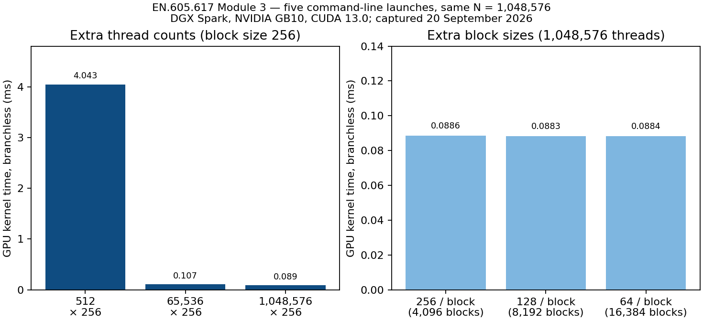
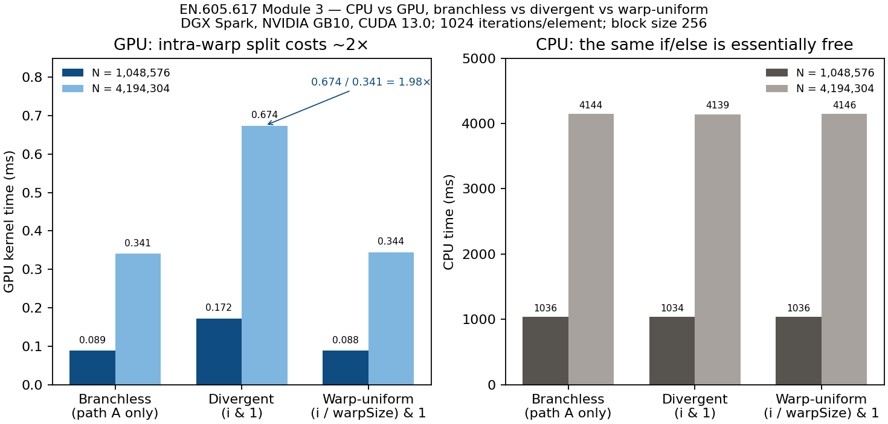

Cover sheet
CUDA Threads and Blocks
EN.605.617.81 — Introduction to GPU Programming, Module 3 assignment
| Student | Xiaohui Chen |
|---|---|
| Course / term | EN.605.617.81, AE Fall 2026 |
| Instructor | Chance Pascale |
| Assignment | CUDA Threads and Blocks (Module 3) |
| Date | 20 September 2026 |
| Hardware | DGX Spark, NVIDIA GB10, compute capability 12.1, 48 SMs, warp size 32 |
| Software | CUDA Toolkit 13.0 (nvcc V13.0.88), driver 580.159.03, -arch=native |
| Program | module3/assignment.cu, built as assignment.exe by make |
Name and a page indicator appear in the running header of every section below, and again in the print footer as “page x of y”.
Part 1 — The same algorithm on the CPU and on a CUDA kernel, with almost no branching
Problem statement
Write one algorithm twice: once as ordinary C++ on the host, once as a CUDA kernel. Keep conditional branching to a minimum. Use a non-trivial amount of data (thousands to millions of elements). Time both sides, and show that they compute the same numbers. The program must be module3/assignment.cu, built by a no-argument make into assignment.exe, and must accept the starter’s two arguments: total number of threads, then threads per block, including the required invocation assignment.exe 512 256.
Assumptions
- Launch vs data size.
argv[1]andargv[2]size the GPU launch only (course starter). After rounding, that launch may be smaller than \(N\). \(N\) is at least \(2^{20} = 1{,}048{,}576\) so the requiredassignment.exe 512 256still processes “1000s to millions” of elements; a grid-stride loop covers \(N\). The 1-D index is the Module 3D formula \(i = \texttt{blockIdx.x}\cdot\texttt{blockDim.x} + \texttt{threadIdx.x}\) [2], then \(i \mathrel{+}= \texttt{blockDim.x}\cdot\texttt{gridDim.x}\). - Block size 256 unless the command line says otherwise. That is a multiple of the 32-thread warp and is the Lecture 3D default (“192 or 256”) [2].
- The CPU is one thread. The prompt says the host side does not take the launch arguments into account. I did not add OpenMP.
- Kernel time is not memcpy time. GPU kernel milliseconds come from
cudaEventRecordaround the launch only, after a warm-up, averaged over 10 runs. Host-to-device and device-to-host copies are reported separately as “end-to-end.” CPU milliseconds arestd::chrono::high_resolution_clock, one warm-up, average of 5. - Arithmetic intensity is deliberate. Each element does 1,024 fused multiply-adds so the kernel is compute-bound. A one-add vector kernel would hide the later branching result in memory wait. That choice is mine, not the prompt’s.
- Hardware is the DGX Spark listed on the cover. Times will not match a different GPU.
Computations
The branchless work is a Horner-style recurrence shared by host and device (__host__ __device__), so the two sides cannot silently drift:
__host__ __device__ float pathA(float v, int iters) {
for (int k = 0; k < iters; ++k)
v = v * 1.0001f + 1.0f;
return v;
}The kernel is then just “every thread applies pathA to its element,” plus a bounds guard that is never taken when \(N\) is a multiple of the block size (the starter rounds \(N\) so that this is the usual case). Input is \(x_i = 0.001\cdot(i \bmod 1000) + 0.1\).
Correctness is a pairwise compare of the CPU array and the GPU array with tolerance \(10^{-4}\). On this machine the error was 0 at every size I ran: the values are bit-identical. A hand check of \(y_0\) after 1,024 iterations of path A is \(1078.328369\) on both sides.
| Launch | \(N\) | CPU (ms) | GPU kernel (ms) | GPU end-to-end (ms) | CPU / GPU kernel |
|---|---|---|---|---|---|
512 256 (stride over \(N\)) | 1,048,576 | 1011.49 | 4.0433 | 4.1948 | 250× |
1048576 256 | 1,048,576 | 1035.59 | 0.0886 | 0.2392 | 11,691× |
4194304 256 | 4,194,304 | 4144.50 | 0.3410 | 0.9076 | 12,155× |
Conclusions / discussion
The required assignment.exe 512 256 run builds, launches two blocks of 256 threads, and still processes \(N = 1{,}048{,}576\) elements (grid-stride). It matches the CPU bit-for-bit. Those 512 threads occupy only a couple of the 48 SMs, so the kernel is about 46× slower than the same \(N\) launched with 1,048,576 threads (4.0433 ms vs 0.0886 ms). That is Lecture 3D’s utilization point, not a timing bug. The million-thread and four-million-thread rows are the ones that keep the GPU busy. There the GPU kernel is about four orders of magnitude faster than one CPU thread, which is what you would hope for a long FMA loop spread over 48 SMs. End-to-end is slower than the kernel (copies of 4–16 MiB) and still far ahead of the CPU, because 1,024 operations per element dominate a few megabytes of traffic on this box. I would not expect the same ratio from a memory-bound kernel.
The launch arithmetic is the Module 3 point: 1,048,576 threads at 256 per block is 4,096 blocks, which is many more blocks than SMs. That is the intended state — the block dispatcher keeps the 48 SMs busy [2].
Part 2b — Two additional thread counts and two additional block sizes
Problem statement
The Module 03 Assignment Rubric awards points for executing the program with two additional thread counts and two additional block sizes, all from external command-line arguments, and for capturing every run. Thread count and block size must both be variable from the CLI [9].
Assumptions
- The required invocation
512 256is the baseline. Additional thread counts are 65,536 and 1,048,576. Additional block sizes are 128 and 64. Every block size is at least 64, the rubric minimum. - These five launches are listed in
assignment_config.yamlso the course Linux runner captures them; they are not hard-coded insidemain. - \(N\) stays \(1{,}048{,}576\) on every row (grid-stride when the launch is smaller), so the comparison is the launch, not the data size.
Computations
| Command | Threads | Block | Blocks | GPU branchless (ms) | GPU divergent (ms) | div / branchless |
|---|---|---|---|---|---|---|
512 256 | 512 | 256 | 2 | 4.0433 | 7.9973 | 1.98× |
65536 256 | 65,536 | 256 | 256 | 0.1069 | 0.2077 | 1.94× |
1048576 256 | 1,048,576 | 256 | 4,096 | 0.0886 | 0.1723 | 1.95× |
1048576 128 | 1,048,576 | 128 | 8,192 | 0.0883 | 0.1718 | 1.95× |
1048576 64 | 1,048,576 | 64 | 16,384 | 0.0884 | 0.1722 | 1.95× |

Conclusions / discussion
Going from 512 threads to 65,536 occupies the GPU; going on to 1,048,576 is a small further drop. Once the grid is large, 64, 128, and 256 threads per block are interchangeable for this kernel. The \(2\times\) divergence tax is the same in every transcript, which is the point of capturing all five runs rather than only the required 512 256.
Part 2 — The same algorithm with a conditional branch
Problem statement
Keep the same two arithmetic paths and the same CPU / GPU pairing, but now choose the path with an if/else. Measure what that does to each side. Include a comparison chart and a short discussion (also in results-thoughts.txt).
Assumptions
- Path B is the same length as path A: \(v \leftarrow 0.9999\,v - 1\), 1,024 times. Equal path lengths make a fully divergent warp’s bill theoretically \(2\times\), which is a clean test rather than a realistic mix of cheap and expensive sides.
- The condition is on the index, not on the data, so I am measuring control-flow cost, not a change in the values being fed in.
- Two GPU conditions, on purpose:
- Divergent:
if (i & 1)— odd and even lanes of every warp disagree. This is the case Lecture 3A warned about [1]. - Warp-uniform:
if ((i / warpSize) & 1)— consecutive warps take opposite paths, no warp is split. This is the “condition depends only on(threadIdx / WSIZE)” example in the CUDA C++ Best Practices Guide 13.0 §13.1 [4].
- Divergent:
- The CPU uses the same two conditions. I read the device
warpSize(32) and pass it into the host loop so “uniform” means the same grouping on both sides. - Compute capability 12.1 has independent thread scheduling (since 7.0) [5]. That does not cancel the bill: both paths are still issued, with the other lanes inactive.
Computations
The divergent kernel, stripped to the test:
if (i & 1) y[i] = pathA(x[i], iters);
else y[i] = pathB(x[i], iters);The warp-uniform kernel replaces the condition with (i / warpSize) & 1, using the CUDA built-in rather than a hard-coded 32, as Lecture 3A slide 5 asked [1].
Correctness again compared every element to the CPU. Error was 0. A hand check of the divergent case confirmed the wiring: \(x_0\) takes path B and lands on \(-973.263611\); \(x_1\) takes path A and lands on the Part 1 value. Both sides agreed.
| \(N\) | Variant | CPU (ms) | GPU kernel (ms) | GPU rel. | CPU rel. |
|---|---|---|---|---|---|
| 1,048,576 | branchless | 1035.59 | 0.0886 | 1.00× | 1.000 |
| 1,048,576 | divergent i & 1 | 1034.13 | 0.1723 | 1.95× | 0.999 |
| 1,048,576 | warp-uniform | 1036.02 | 0.0883 | 1.00× | 1.000 |
| 4,194,304 | branchless | 4144.50 | 0.3410 | 1.00× | 1.000 |
| 4,194,304 | divergent i & 1 | 4139.33 | 0.6743 | 1.98× | 0.999 |
| 4,194,304 | warp-uniform | 4145.74 | 0.3443 | 1.01× | 1.000 |

figures/make_chart.py from those measurements, 20 September 2026.Conclusions / discussion
The GPU result is the Module 3 lecture, measured. A warp issues one instruction at a time [5]. When 16 lanes want path A and 16 want path B, the warp runs both loops and masks off the idle half; with equal-length loops the time is the sum, which is why the ratio sits at 1.95× and 1.98× rather than “a bit slower.” The same 2× shows up on the required 512-thread launch (7.9973 / 4.0433 = 1.98×), so the tax is the split warp, not the block count. When the same if is written so that a whole warp agrees, the second loop is never issued for that warp, and the time falls back on the branchless line. Lecture 3A’s half-warp wording is the 2017 version of that idea; on compute capability 12.1 the unit that has to agree is the full 32-thread warp.
The CPU result is the reason the prompt asked for both implementations. The same source-level if (i & 1) moves the host time by a fraction of a millisecond on a one-second run. A CPU thread has its own program counter and a branch predictor; alternating odd/even is learned immediately. So “branches are expensive” is not a property of the if token. It is a property of one instruction stream shared by 32 lanes.
An analogy I used on myself: a CPU thread is a person reading a choose-your-own-adventure book alone. A warp is 32 people sharing one reader. If they disagree about which page to turn to, the reader has to read both pages aloud. If you seat the people so that each group of 32 wants the same page, you are back to one page.
I am not reading the 10,000× CPU-to-GPU column as a general GPU-is-always-that-fast claim. It is this kernel, this iteration count, this one CPU thread, this GPU. The number that I trust as a design rule is the GPU-to-itself 2× when a warp splits.
(i / warpSize), or blockIdx — or pack the data so that a whole warp is on one side. Interleaving the two sides inside 32 consecutive threads is the expensive layout, and the CPU will not warn you about it.
Part 3 — The previous-year main (prompt item 5)
The prompt shows a main from an earlier year and asks: if the surrounding script only executes that function once, what is good and bad about the submission? I am not fixing it and I am not submitting it.
Problem statement
Critique the listed main under a single-execution script. Short, specific, no rewrite.
Assumptions
I take the listing as written: add<<<blocks,threads>>> timed with std::chrono and no device synchronize before stop; argv[1] is a block count; arrays are int a[N] on the stack; addHost writes into the same c that just came back from the device. I do not assume a value of N that is not in the listing.
What is good
It prints card info, it has a CPU sibling of the kernel, it lets the launch configuration change on the command line, and it prints both times. Those are the right pieces for this assignment.
What is bad on a single run
- The GPU clock is not measuring the kernel. A kernel launch returns when the work is queued. Without
cudaDeviceSynchronizeor acudaEventsynchronize beforestop, the “GPU” interval is launch overhead. On one execution that number looks like a spectacular speedup and there is no second sample to make you suspicious. This is the defect that a one-shot script punishes most. - The arguments are not this year’s arguments. Last year,
argv[1]was blocks andargv[2]was threads per block. This yearassignment.exe 512 256means 512 total threads and 256 per block (two blocks). The same command on last year’smainlaunches \(512\times 256 = 131{,}072\) threads and still walks a compile-timeN. - \(N\) and the grid do not have to match. Defaults are 3 blocks × 64 threads = 192 threads. Either most of
Nis never touched, or, ifNis large and the arrays really areint a[N]on the stack, the “thousands to millions” the prompt asked for will not fit. - No CUDA error checks. A failed
cudaMallocor an illegal launch is silent. A one-shot script then looks like a passing run. - The CPU pass overwrites the evidence.
addHost(a, b, c)writes intocafter the device-to-host copy, so that single execution cannot compare GPU output to CPU output. - No warmup. The first launch includes extra driver work. One number is not a measurement.
Conclusions
The one-execution constraint is what turns “rough lab code” into a bad submission. There is no second run to notice that the GPU time is implausibly small, no check that c is right, and a default grid of 192 threads that will not keep a modern GPU busy — the opposite of Lecture 3D’s “allocate large numbers of threads” [2]. The good instincts (CPU sibling, printed times, card info) are all undercut by timing an asynchronous launch with a host clock and then throwing away the GPU result.
Takeaways
assignment.exe 512 256builds withmake, runs, processes \(N = 10^6\) via grid-stride, and matches the CPU. Two extra thread counts and two extra block sizes are the same program with different argv, all captured inproof/.- The branchless kernel is the same recurrence on both sides and is bit-identical.
- An
ifthat splits a warp costs this GPU almost \(2\times\) when the two sides are the same length. The sameifaligned towarpSizecosts nothing extra. The CPU does not care either way. - Time kernels with device events and a synchronize, not with a host clock around an asynchronous launch. Check every CUDA call. Do not overwrite the array you still need to verify.
References
Appendix — How the program was run
export PATH=/usr/local/cuda/bin:$PATH
cd module3
make
./assignment.exe 512 256
./assignment.exe 65536 256
./assignment.exe 1048576 256
./assignment.exe 1048576 128
./assignment.exe 1048576 64Every CUDA call goes through CUDA_CHECK. The process exits non-zero if any correctness group fails. On 2026-09-20 all five commands printed All correctness checks passed.